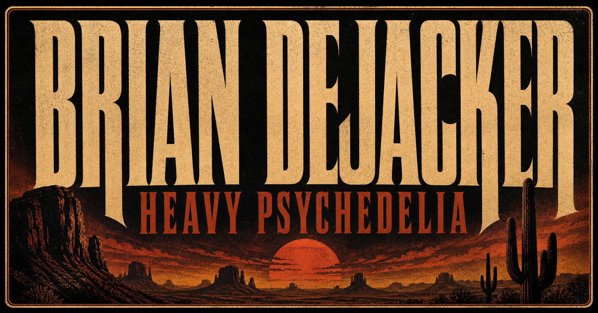
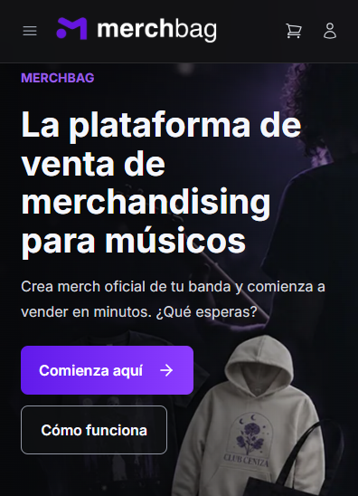

Partir de una intención
La necesidad de presentar a la banda dio una dirección concreta a la exploración de Sites.
La página de mi banda como espacio de difusión musical y como una oportunidad para explorar Sites de ChatGPT e integrar una tienda externa.

Quería que mi banda tuviera un lugar propio en internet para contar quiénes somos, compartir nuestra música y reunir los contenidos que suelen estar dispersos entre plataformas y redes sociales.
La web de Brian Dejacker presenta nuestra identidad de hard-psych y rock psicodélico desde Valdivia. Reúne información de la banda, lanzamientos, videos, música y poleras oficiales en una experiencia común.
Además de resolver una necesidad real de difusión, el proyecto me permitió aprender sobre una herramienta nueva y probar cómo integrar servicios externos en una página creada con ayuda de IA.
Sites permite crear, alojar y compartir sitios web describiendo lo que se quiere construir en ChatGPT o Codex. El trabajo parte de una conversación y se refina mediante instrucciones, referencias y revisión de los resultados.
Para este proyecto exploré el complemento Sites desde ChatGPT: definir la intención de la página, desarrollar su contenido y ajustar la experiencia de la banda mediante peticiones concretas.
La necesidad de presentar a la banda dio una dirección concreta a la exploración de Sites.
Pude describir cambios, revisar el resultado y ajustar el sitio durante el desarrollo.
La página ofrece un acceso común a la información, música, videos y merchandising de la banda.
La integración de Merchbag permitió incorporar una experiencia de compra dentro del sitio.
Grabación de navegación por la web de Brian Dejacker, con su contenido musical y visual.
Descripción del recorrido: navegación vertical por las secciones del sitio, desde el contenido musical hasta la galería e información de la banda.
Merchbag es una plataforma para crear y vender merchandising oficial de bandas y músicos. Según su sitio, convierte los diseños de los artistas en productos, centraliza los pedidos y coordina la impresión bajo demanda, los envíos y los pagos a los creadores.
Su propuesta permite ofrecer merchandising sin gestionar inventario propio ni asumir un costo inicial de producción. En el caso de Brian Dejacker, lo utilizamos para ofrecer las poleras oficiales de la banda.

Integramos la tienda de Merchbag mediante un iframe: un bloque que muestra una página de otro servicio dentro de nuestra web. Así, los visitantes pueden explorar las poleras y acceder al proceso de compra desde la página de la banda.
La web presenta la identidad y el contenido musical; Merchbag aporta el catálogo y la experiencia comercial. Esto permitió conectar ambas funciones utilizando una integración existente.
En la misma web también se incorporan reproductores de Spotify y YouTube para facilitar el acceso a la música y los videos.
El resultado combina una utilidad concreta para mi banda con una experiencia de aprendizaje: explorar Sites, desarrollar una presencia digital mediante conversación e integrar herramientas que ya resuelven necesidades específicas.
El proyecto muestra cómo puedo conectar contenido, herramientas de IA y servicios externos para construir una experiencia coherente alrededor de una necesidad real.